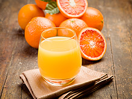
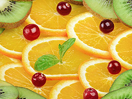

Best Recipes

Tumeric Antioxidant Smoothie
Turmeric is a rhizomatous herbaceous perennial plant of the ginger family. The average person may best recognize turmeric as a spice commonly used in Indian cuisine. The active compound curcumin is known to have a wide range of medicinal benefits including anti-inflammatory, antioxidant, antitumour, antibacterial, and antiviral activities.Learn More

Learn More
Antioxidant Acai Cacao Smoothie
Acai berries have more antioxidants than nearly all other foods with high levels of these helpful compounds, including red wine, blueberries, blackberries, and raspberries. The antioxidants found in acai fruits are called anthocyanins and flavonoids. Most of the other ingredients in this recipe are also high in antioxidants, in particular goji berries and bee pollen.Learn More

Learn More
Schizandra Berry Superfood Smoothie
This flavorful and exceptionally nutritious smoothie featuring the five-flavor superfood, schizandra berry. Schizandra berry is one of my new favorite superfoods. I dabbled with the berries in the past, using them to make tea, but it wasn’t until this new extract powder recently hit the market that it became a regular in my rotation.Learn More
Staff Picks
- Chocolate Blueberry Spirulina Smoothie
- Chocolate Almond Berry Butter Smoothie
- Pineapple Chlorella Smoothie
- Blueberry Chocolate Dream Smoothie
- Aloe Vera Lemonade Smoothie
- Bananarama Superfood Smoothie
- The T-Mac Smoothie
- Superfood Energizer Smoothie
- Blissful Bee Pollen Smoothie
- Acai Antioxidant Smoothie